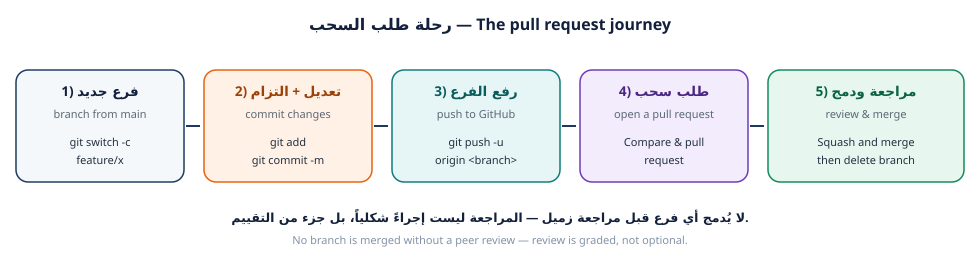

اليوم ستقوم بأول مساهمة حقيقية في مشروع الفريق: تنشئ فرعاً باسمك، وتكتب ملف بطاقتك، وتلتزم بالعمل، وترفع الفرع إلى GitHub، ثم تفتح طلب سحب (Pull Request) يشرح ما فعلته، وتطلب مراجعة من زميل، وتردّ على ملاحظاته. هذه هي دورة عمل أي فريق برمجي في العالم.
Today you make your first real contribution: create a branch, write your card file, commit, push, open a pull request, request a peer review, and respond to feedback. This is exactly how professional teams work.
git switch -c وتسميته باتفاقيات الفريق.git add وgit commit وصياغة رسالة التزام مهنية.git push -u origin <branch> وقراءة رسالة الربط (upstream).
لأن main هو النسخة التي يعتمد عليها الجميع. لو رفع كل طالب تعديله مباشرة إلى main
لفقدنا القدرة على المراجعة، ولانهار المشروع عند أول خطأ. الفرع يعطيك مساحة آمنة
للتجربة، وطلب السحب يعطي الفريق فرصة الفحص قبل الدمج.
اسم الفرع رسالة للفريق. الاتفاقية المتبعة في المشروع: type/username-topic
حيث type نوع العمل (feature, fix, docs, chore)، وusername اسمك على GitHub،
وtopic وصف قصير بالإنجليزية.
A branch name communicates intent. Team convention: type/username-topic where type is one of
feature, fix, docs, chore.
| ✔ اسم فرع صحيح | ✘ اسم فرع خطأ | السبب |
|---|---|---|
feature/omar-qa-card |
my-branch |
لا يدل على صاحبه ولا موضوعه |
docs/leen-readme-faq |
test |
غامض، وتكرار test يفسد المشروع |
fix/sara-search-filter |
sara/new/final/2 |
شرطات لا مسارات، وبلا معنى |
chore/ali-regenerate-index |
فرع علي |
حروف عربية ومسافة في اسم الفرع |
الهدف: أن يبدأ العمل من أحدث نسخة، وأن يكون لعملك رقم مرجعي في المشروع.
الخطوة 1 — زامن نسختك المحلية قبل أي شيء:
$ cd ~/projects/class-team-hub $ git switch main $ git pull --ff-only remote: Enumerating objects: 12, done. Updating 8de1e7a..a1b2c3d Fast-forward data/members/ali-h.json | 9 +++++++++ 1 file changed, 9 insertions(+) $ git log --oneline -3 a1b2c3d (HEAD -> main, origin/main) Merge pull request #7 from nour-dev/feature/nour-card 9f8e7d6 feat(members): add card for nour-dev c4d5e6f Merge pull request #6 from ali-h/feature/ali-card
من يبدأ العمل من نسخة قديمة سيصنع تعارضاً بنفسه بلا داعٍ، وسيضطر لحلّه لاحقاً. المزامنة قبل كل فرع جديد عادة لا استثناء.
الخطوة 2 — افتح Issue في مستودع الفريق:
New issue.طلب ميزة / Feature request.إضافة بطاقة <اسم المستخدم> إلى دليل الفريق.البطاقة تظهر في الصفحة، والفحص التلقائي ينجح).Submit new issue وسجّل الرقم (مثال: #12).#……… — رابطها: https://github.com/……………………/class-team-hub/issues/………git pull --ff-only:$ git pull --ff-only
$ git switch -c feature/<username>-card Switched to a new branch 'feature/omar-qa-card' $ git branch main * feature/omar-qa-card $ git branch --show-current feature/omar-qa-card $ git status -sb ## feature/omar-qa-card
لاحظ علامة النجمة * في قائمة الفروع — تدل على الفرع الحالي. ومن الآن فصاعداً كل
التزاماتك تسقط على هذا الفرع، وmain محفوظ سليم.
The * marks your current branch. From now on every commit lands on this branch, leaving
main untouched.
أضف اسم الفرع الحالي إلى «موجّه الطرفية» (prompt) أو راقبه في شريط VS Code السفلي Before every command ask yourself: على أي فرع أنا الآن؟
الصق مخرجات git branch (يجب أن يظهر فرعك بنجمة):
$ git branch
الخطوة 1 — انسخ القالب باسم مستخدمك:
$ cp data/members/00-template.json data/members/omar-qa.json $ ls data/members/ 00-template.json 01-example-student.json 99-you-instructor.json ali-h.json nour-dev.json omar-qa.json
الخطوة 2 — افتح الملف واملأ الحقول الخمسة الإلزامية:
{
"fullName": "اسمك الكامل",
"github": "your-github-username",
"role": "مطوّر",
"favoriteCommand": "git status",
"message": "جملة واحدة تعرّف بها عن نفسك (10 إلى 140 حرفاً).",
"tags": ["HTML", "CSS"],
"joinedAt": "2026-10-06"
}
| الحقل | الشرط | صحيح ✔ | خطأ ✘ |
|---|---|---|---|
fullName |
الاسم الحقيقي بلا ألقاب | عمر القاسم |
Mr.Pro |
github |
حروف صغيرة وأرقام وشرطات فقط | omar-qa |
Omar_QA |
role |
من القائمة المعتمدة | مختبر QA |
مبرمج خارق |
favoriteCommand |
يبدأ بـ git |
git log --oneline |
ls -la |
message |
10–140 حرفاً | أبحث عن الأخطاء قبل أن يجدها المستخدم. |
`` (فارغ) |
الأدوار المعتمدة: مطوّر · مصمّم · مختبر QA · كاتب توثيق · قائد فريق
لا تضع بريداً إلكترونياً، رقم هاتف، عنواناً، رقم هوية، أو كلمة مرور. الفحص التلقائي يرفض الملف، وقد يُطلب منك حذف الالتزام وإعادة العمل.
الخطوة 3 — أعِد توليد الفهرس ثم شغّل الفحص:
$ node tools/build-index.mjs [build-index] ✔ تم توليد الفهرس: 6 بطاقة. • ali-h مطوّر • example-student مطوّر • nour-dev مصمّم • omar-qa مختبر QA • you-instructor قائد فريق $ node tests/validate-members.mjs === فحص بطاقات الأعضاء / Validating member cards === --- النتيجة / Result: 6 بطاقة، 0 خطأ، 0 تحذير ---
اقرأ أول سطر خطأ فقط وأصلحه، ثم أعد التشغيل. الرسائل مصمَّمة لتخبرك بالحقل المشكل
واسم الملف. لا تُكمل قبل أن تصبح النتيجة 0 خطأ.
$ node tests/validate-members.mjs
الخطوة 1 — افحص ما ستلتزم به قبل الالتزام:
$ git status -sb ## feature/omar-qa-card M data/members-bundle.js M data/members-index.json ?? data/members/omar-qa.json $ git diff --stat data/members-bundle.js | 13 +++++++++++++ data/members-index.json | 3 ++- 2 files changed, 15 insertions(+), 1 deletion(-)
?? ملف جديد غير متتبَّع · M تعديل مُمرَّر للمرحلة · M تعديل غير مُمرَّر.
تعلم قراءة git status -sb يجعل تشخيص أي مشكلة أسرع ثلاث مرات.
الخطوة 2 — التزم برسالة مهنية:
$ git add data/members/omar-qa.json data/members-index.json data/members-bundle.js $ git commit -m "feat(members): add card for omar-qa" [feature/omar-qa-card 89f5cff] feat(members): add card for omar-qa 3 files changed, 25 insertions(+), 2 deletions(-) create mode 100644 data/members/omar-qa.json
صيغة رسالة الالتزام المعتمدة (Conventional Commits):
<type>(<scope>): <وصف قصير بصيغة الأمر>
| Type | الاستخدام | مثال |
|---|---|---|
feat |
إضافة جديدة | feat(members): add card for omar-qa |
fix |
إصلاح خطأ | fix(ui): correct card alignment on mobile |
docs |
توثيق فقط | docs(readme): add FAQ section |
style |
تنسيق بلا تغيير سلوك | style(css): reorder card properties |
chore |
صيانة وأدوات | chore(index): regenerate members index |
update · changes · final · done · asdf · . — هذه الرسائل لا تشرح شيئاً
للمراجع، وتُحسب عليك في تقييم الورقة.
الخطوة 3 — ارفع الفرع واربطه بالخادم:
$ git push -u origin feature/omar-qa-card Enumerating objects: 8, done. Counting objects: 100% (8/8), done. Writing objects: 100% (5/5), 742 bytes | 742.00 KiB/s, done. Total 5 (delta 1), reused 0 (delta 0), pack-reused 0 remote: remote: Create a pull request for 'feature/omar-qa-card' on GitHub by visiting: remote: https://github.com/school-git-workshop/class-team-hub/pull/new/feature/omar-qa-card remote: To https://github.com/school-git-workshop/class-team-hub.git * [new branch] feature/omar-qa-card -> feature/omar-qa-card branch 'feature/omar-qa-card' set up to track 'origin/feature/omar-qa-card'.
-u تسجّل الربط بين فرعك المحلي والفرع البعيد، فتستطيع بعدها كتابة git push وgit pull
بلا تحديد الاسم. افحص ذلك بـ git branch -vv وسترى [origin/feature/omar-qa-card].
git push -u origin feature/<username>-card:$ git push -u origin feature/omar-qa-card
git branch -vv:$ git branch -vv
الخطوة 1 — افتح طلب السحب:
git push (أو تبويب Pull requests ← New pull request).base: main ← compare: feature/omar-qa-card.feat(members): add card for omar-qa.data/members/omar-qa.json وأعدت توليد الفهرس».
- الأدلة: الصق مخرجات node tests/validate-members.mjs.
- الربط: اكتب Closes #12 ليرتبط الطلب بمهمتك ويُغلق تلقائياً عند الدمج.Create pull request.الدمج مسؤولية المراجع أو المدرّب. من يدمج فرعه بنفسه بلا مراجعة يفقد 15 نقطة من هذه الورقة — لأن المراجعة مهارة مقصودة في التدريب لا إجراء شكلي.
الخطوة 2 — راجع طلب سحب زميلك. افتح Pull requests ← اختر طلباً لزميل ← تبويب
Files changed ← Add review comment.
اقلبه على قواعد المراجعة:
| افعل ✔ | لا تفعل ✘ |
|---|---|
«الحقل favoriteCommand لا يبدأ بـ git، هل تصححه؟» |
«كودك خاطئ» |
«هل تريد إضافة وسم JavaScript أيضاً؟» |
«افعله بشكل صحيح» |
| «ممتاز، البطاقة تظهر بشكل نظيف ✔» | «موافق» بلا أي تفصيل |
| اقتراح تحسين واحد واضح | إطلاق أحكام على الشخص |
الخطوة 3 — ردّ على مراجعة زميلك أنت. أجب على تعليق واحد على الأقل: إما تصحيح
والتزام جديد على نفس الفرع، أو شرح مقنع. ثم اضغط Resolve conversation.
| البند | القيمة |
|---|---|
| رقم طلب سحبك | #……… |
| رابط طلب سحبك | ………………………………… |
| اسم الزميل الذي راجعك | ………………………………… |
| اسم الزميل الذي راجعته | ………………………………… |
| رقم طلب السحب الذي راجعته | #……… |
الصق نص تعليق المراجعة الذي كتبته لزميلك:
…………………………………………………………………………………………………………
الهدف: تجربة دورة المراجعة الفعلية: ملاحظة ← تصحيح ← التزام إضافي ← إعادة فحص.
# مثال: المراجع طلب إضافة وسم JavaScript إلى بطاقتك $ nano data/members/omar-qa.json # أو افتحه في VS Code وعدّل tags $ node tools/validate-members.mjs --- النتيجة / Result: 6 بطاقة، 0 خطأ، 0 تحذير --- $ git add data/members/omar-qa.json $ git commit -m "fix(members): add JavaScript tag per review feedback" [feature/omar-qa-card 3c7d9e1] fix(members): add JavaScript tag per review feedback 1 file changed, 1 insertion(+), 1 deletion(-) $ git push To https://github.com/school-git-workshop/class-team-hub.git 89f5cff..3c7d9e1 feature/omar-qa-card -> feature/omar-qa-card
لاحظ أن نفس طلب السحب تحدّث تلقائياً — لم تفتح طلباً جديداً. هذه قوة الفروع: طلب السحب يعرض كل ما على الفرع حتى لحظة الدمج.
Notice the pull request updated itself — no new PR needed. A PR always shows the current state of your branch until it is merged.
الصق مخرجات git log --oneline على فرعك (يجب أن يظهر التزامان أو أكثر):
$ git log --oneline
سجّل ما تعلّمته من ملاحظة المراجع (سطر واحد):
…………………………………………………………………………………………………………
س1. ما الفرق بين git switch -c feature/x وgit switch feature/x؟
س2. لماذا نزامن main قبل إنشاء الفرع، لا بعده؟
س3. ما معنى Closes #12 في وصف طلب السحب؟
س4. اكتب رسالة التزام صحيحة لمهمة «إصلاح محاذاة البطاقة في الجوال».
main محدَّثnode tests/validate-members.mjs بلا أخطاءgit branch -vv يُظهر التتبّعCloses #…| البند | القيمة |
|---|---|
| اسم الفرع | feature/…………………………… |
| عدد الالتزامات | ………… |
| رقم المهمة (Issue) | #……… |
| رقم طلب السحب | #……… |
| حالة طلب السحب | ☐ مفتوح ☐ تمت الموافقة ☐ مدموج |
في ورقة العمل 04 سترى أثر تعديلات زملائك بعد دمجها، وتتعلم كيف تجلب تحديثاتهم إلى جهازك، وكيف يعمل الدمج (Merge)، وكيف تسترجع أي تعديل أفسد المشروع.